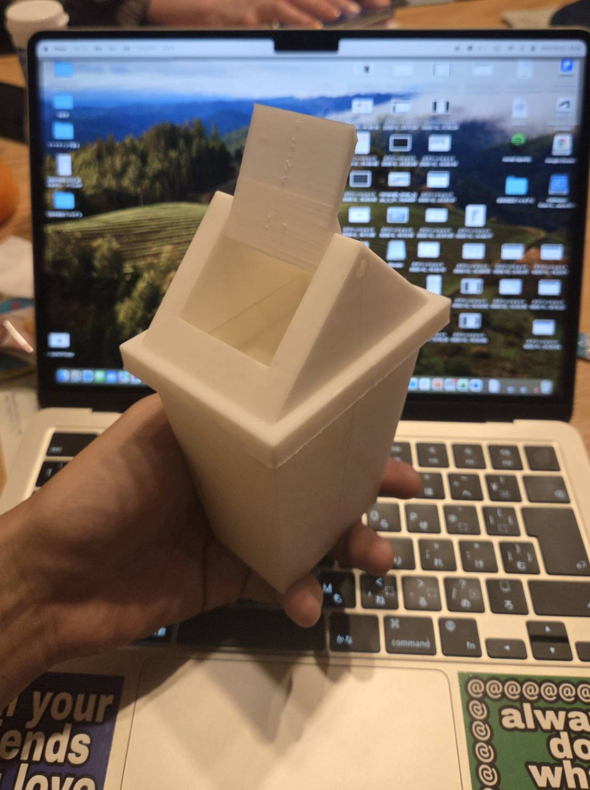
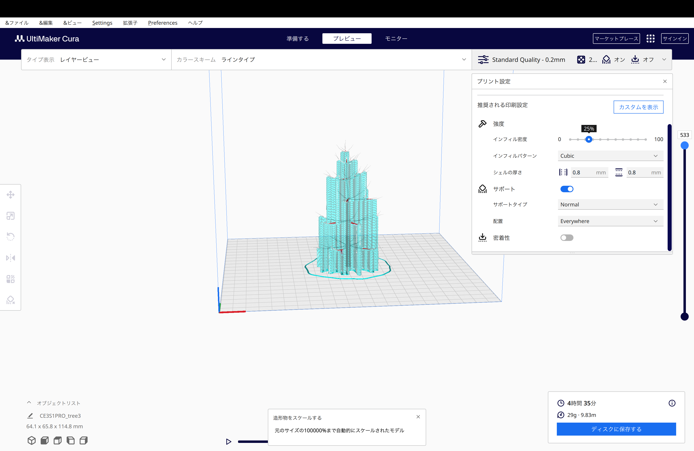

スタンド
スタンドのパーツが無事にモデリングできたため印刷した
現像したものの写真
かんざし部分のデザイン
かんざしの部分を作るにあたり、当初の予定通り木を模したものにデザインすることにした早速Fusion360でモデリングしてモデリングして見たのだが、これがとても難しい。
木の幹というのは根本から伸びていくにつれ先細りになっていき、その先端部は枝分かれして
細分化されていくため細かな調整が多く、Fusion360の得意なモデリングではないと察した。
なんとか再現しようとするも無生物感が強く、実際に擦り出した時には一体何を表現して
いるのかわからなくなってしまうのではないかと思った。
Blender
そこでモデリングに使う３Dソフトを変えてみることにした。今度は、彫刻や粘土のように操作して造形するBlenderを使うことにした。こちらのソフトは使い慣れておらず採寸の設定など
思うように行かなかったが、木に関してはサンプルもデフォルトであったため、それwP用いて
枝や幹の細部を自分で調整しながらモデリングした。

これがモデリングしたものの写真である。
これを持って早速ファブラボに行くことにした。
問題点
やっとソフトを変えてなんとか木のモデリングが完了したわけだが、ここで大きな問題とぶつかった。モデリングした木を実際にCuraに通してみると、サポート材通して多くなってしまって、現像できても
サポート材を剥がす作業で本体の枝部分が折れてしまう可能性が大きかった。

次回は枝のデザインについて考えた過程を載せていきたい。